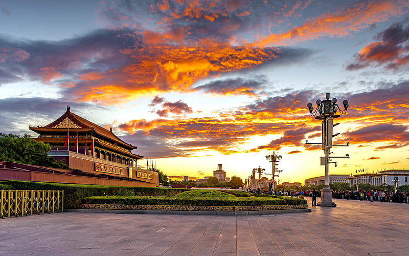

First Emperor Of China
The first emperor of China is generally considered to be Qin Shi Huang, who ruled from 221 BC to 210 BC. He was the founder of the Qin dynasty and is known for unifying China under a centralized imperial rule for the first time.
Qin Shi Huang is also famous for his construction of the Great Wall of China and his ambitious public works projects. He implemented a standardized system of writing, currency, and measurements throughout his empire.
He is also remembered for his brutal tactics in consolidating power, including the burning books and burying scholars alive who disagreed with him. Despite these controversial actions, Qin Shi Huang's reign laid the groundwork for many aspects of Chinese culture and governance that endure to this day.

Tiananmen
The Tiananmen ("Gate of Heavenly Peace"), a gate in the wall of the Imperial City, was built in 1417 during the Ming dynasty. In the 17th century, fighting between Li Zicheng's rebel forces and the forces of the Manchu-led Qing dynasty caused heavy damage to, or even destroyed, the gate. Tiananmen Square was designed and built in 1651 and was enlarged fourfold in the 1950s.[8][9]
The gate historically known as the "Great Ming Gate", the southern gate to the Imperial City stands near the center of the square. It was renamed the "Great Qing Gate" during the Qing dynasty, and the "Gate of China" during the Republican era. Unlike the other gates in Beijing, such as the Tiananmen and the Zhengyang Gate, this was a purely ceremonial gateway, with three arches but no ramparts, similar in style to the ceremonial gateways found in the Ming tombs. This gate had a special status as the "Gate of the Nation", as can be seen from its successive names.
It normally remained closed, except when the emperor passed through. Commoner traffic was diverted to side gates at the western and eastern ends of the square, respectively. Because of this diversion in traffic, a busy marketplace, called "Chess Grid Streets", was developed in the large fenced square to the south of this gate.[citation needed]
19th century
In 1860, during the Second Opium War, when British and French troops occupied Beijing, they pitched camp near the gate and briefly considered burning down the gate and the Forbidden City. Ultimately, they decided to spare the Forbidden City and instead burn down the Old Summer Palace. The Xianfeng Emperor eventually agreed to let Western powers barrack troops – and later establish diplomatic missions – in the area, hence there was the Legation Quarter immediately to the east of the square. When the forces of the Eight-Nation Alliance besieged Beijing during the Boxer Rebellion in 1900, they badly damaged the office complexes and burnt down several ministries. After the Boxer Rebellion ended, the area became a space for the Eight-Nation Alliance to assemble their military forces.[citation needed]
20th century
In Beijing, Tiananmen was re-developed from an insular imperial quarter to a larger public space viewed as consistent socialist political.[10]: 110 Over the 1950s, the square was quadrupled in size.[10]: 110
In 1954, the Gate of China was demolished to allow for the enlargement of the square. In November 1958, a major expansion of Tiananmen Square started, which was completed after only 11 months, in August 1959. This followed the vision of Mao Zedong to make the square the largest and most spectacular in the world and intended to hold over 500,000 people. In that process, a large number of residential buildings and other structures were demolished.[11] On its southern edge, the Monument to the People's Heroes has been erected. Concomitantly, as part of the Ten Great Buildings constructed between 1958 and 1959 to commemorate the ten-year anniversary of the People's Republic of China (PRC), the Great Hall of the People and the Revolutionary History Museum (now the National Museum of China) were erected on the western and eastern sides of the square.[11]
For the first decade of the PRC, each National Day (October 1) was marked by a large military parade in Tiananmen Square, in conscious emulation of the annual Soviet celebrations of the Bolshevik Revolution. After the disaster of the Great Leap Forward, the CCP decided to cut costs and have only smaller annual National Day celebrations in addition to a large celebration with a military parade every 10 years. However, the chaos of the Cultural Revolution almost prevented such an event from taking place on National Day in 1969 but did take place in 1966 and 1970.[citation needed]
In 1971, large portraits of Karl Marx, Friedrich Engels, Vladimir Lenin, Joseph Stalin, Sun Yat-sen, and Mao Zedong were erected in the square, painted by artist Ge Xiaoguang, who is also responsible for producing the famous portrait of Mao that hangs over the Gate of Heavenly Peace. In 1980, with the downgrading of political ideology following Mao's death, the portraits were taken down and thenceforth only brought out on Labor Day (May 1) and National Day.[citation needed]
Ten years later, in 1979, the CCP again decided against a large-scale celebration, coming at a time when Deng Xiaoping was still consolidating power and China had suffered a rebuff in a border war with Vietnam early in the year. By 1984, with the situation much improved and stabilized, the PRC held a military parade for the first time since 1959. The aftermath of the Tiananmen Square massacre prevented any such activities in October 1989, but military parades have been held in 1999 and 2009, on the 50th and 60th anniversaries of the PRC's founding.[12]
One year after Mao's death, a mausoleum was built near the site of the former Gate of China along the main north–south axis of the square. In connection with this project, the square was further increased in size to become fully rectangular and being able to accommodate 600,000 people.[11]